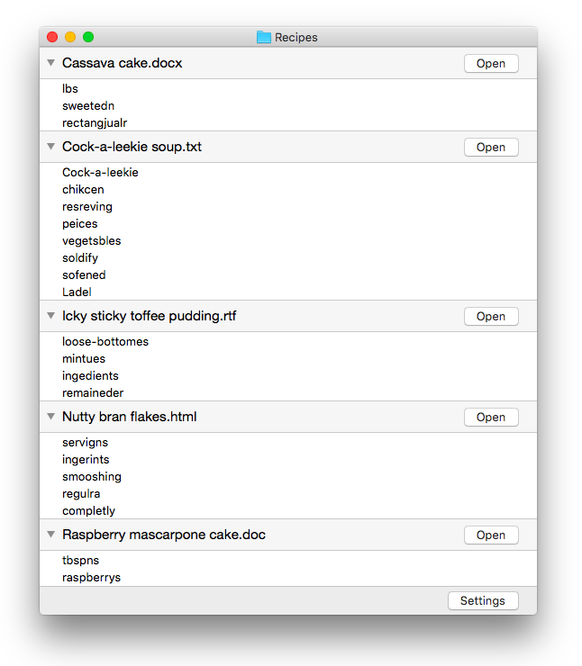

Magic Spell
Check spelling in many files at once
(Note: this project is not actively maintained because I’m more interested in iPad than Mac these days.)
Nothing looks unprofessional like spelling errors in your documents. Open a folder with Magic Spell and it checks the documents inside, showing the results in one convenient list. This is much faster than opening each document separately.
Ideal for:
- Software projects
- Technical documentation
- Blogs and websites
- Other sets of related documents
Supported document types: plain text, Microsoft Word, Rich Text Format, HTML